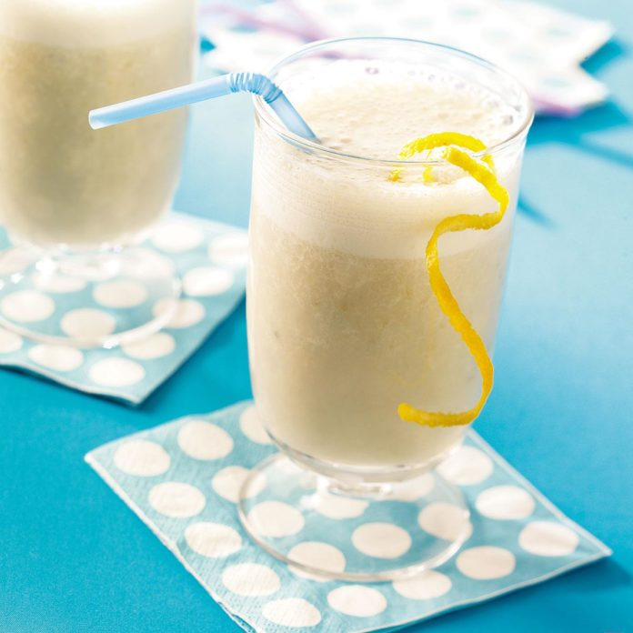

Banana Smoothie

This banana smoothie has to be one of my favorite recipes because it can be made in a flash, yet it's full of flavor. I think the honey adds just the right amount of sweetness. Everyone will love it...not just banana lovers!
Ingredients
Instructions